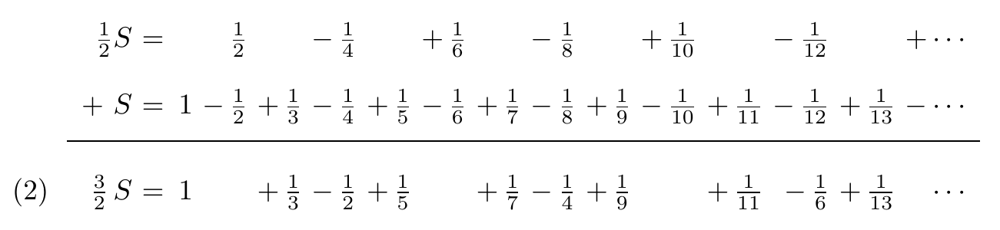

Subject: Intuition behind infinities in mathematics
Sources:
- "Understanding analysis" by Stephen Abbott
- "Real Analysis: A Long-Form Mathematics Textbook" by Jay Cummings
Imagine you have 10 apples. Give away 5, and you’re left with fewer - obvious, right? Or suppose you want to add fractions and expect to equal because addition is commutative. But when we enter the realm of infinity, these intuitions shatter.
We'll explore how an infinite hotel, fully booked, could still accommodate new guests - even infinitely many - and how some infinities are larger than others. This is the paradoxical universe of mathematical infinity.
Hilbert's Hotel: A Paradox of the Infinite
Consider Hilbert's Hotel, a thought experiment by mathematician David Hilbert.
Imagine a hotel with infinitely many rooms, numbered 1, 2, 3, ..., all occupied. When a new guest arrives, the manager shifts the guest in Room 1 to Room 2, Room 2 to Room 3, and so on. Suddenly, Room 1 is free!
Now, suppose an infinite busload of new guests arrives. The manager asks everyone to move to the room double their current number (Room 1 → 2, Room 2 → 4, etc.). All odd-numbered rooms become vacant, freeing up infinite space for the newcomers.
This defies finite-world logic: the hotel was "full", yet it absorbed more guests without expanding. Infinity bends our understanding of quantity - it isn't a fixed size but a dynamic concept.
What This Teaches Us
First, Hilbert's Hotel reveals that intuition fails spectacularly with infinity. Second, notice that every time guests switch rooms, the same people occupy new rooms. This shows there are "just as many" rooms from 1 to ∞ as from 2 to ∞ (or any other starting point). The same logic applies to accommodating infinite new guests: the hotel's occupancy status never changes - it's always "full", yet always flexible. To formalize this, mathematicians use sets and cardinality.
A set is a collection of objects (e.g., {1, 2, 3} or {a, b, c}). Two sets have the same cardinality (size) if there exists a function - a one-to-one and onto mapping - between them. We write this as f : A → B.
For finite sets, cardinality is simple:
- |{a, b, c}| = 3
- |{1, 4, 9, …, 100}| = 10
- |ℕ| = ∞ *
Example 1: {1, 2, 3} and {a, b, c} have the same cardinality because we can pair elements: 1 ↔ b, 2 ↔ a, 3 ↔ c. The pairing could be different, as long it is a one-to-one and onto.
Example 2: {x, y, z} and {m, a, t, h} do not - no pairing covers all four letters.
Infinity vs. Intuition
Let E = {2, 4, 6, ...} be the even natural numbers. Surprisingly, |ℕ| = |E|. Define f : ℕ → E by f(n) = 2n:
ℕ: 1 2 3 ...
E: 2 4 6 ...
Similarly ℕ and ℤ (integers) have the same cardinality. Let the mapping f(n) be equal to if n is odd and if n is even.
ℕ: 1 2 3 4 5 6 ...
ℤ: 0 -1 1 -2 2 -3 ...
Even the rational numbers ℚ are equivalent to ℕ, though to showing that is a little bit more involved. These sets are countable.
Not All Infinities Are Equal
A set is countable if its cardinality equals |ℕ| An uncountable set has no mapping with ℕ. Is every infinite set countable? Intuition suggests "yes" - infinity leaves "plenty of room." But as G.H. Hardy remarks, "[The mathematician's] subject is the most curious of all - there is none in which truth plays such odd pranks."
The real numbers ℝ are uncountable. Cantor proved this elegantly for the interval (0, 1), which is even more strong claim (see the details of this proof here - Beauty of Cantor's diagonal method link), implying |ℝ| > |ℕ|.
How Many Infinities Are There?
Infinitely many! To see why, we need the definition of a power set - the set of all subsets of A, denoted ℘(A). Example:
- If A = {1, 2}, then ℘(A) = {∅, {1}, {2}, {1, 2}}. Note that ∅ is an empty set. It's always a subset of any set.
- If B = {a, b, c}, then ℘(B) = {∅, {a}, {b}, {c}, {a, b}, {a, c}, {b, c}, {a, b, c}}.
In general |A| < |℘(A)|. This generates an endless chain of infinities:
|ℕ| < |℘(ℕ)| < |℘(℘(ℕ))| < |℘(℘(℘(ℕ)))| < ...
But what is the cardinality of the "set of all infinities"? No such set exists. The collection of all cardinalities is "too big" to be a set.Rearrangements of Infinite Series
Consider the series of fractions that continues to infinity:
If we sum the terms sequentially, we obtain partial sums sn (the sum of the first n terms):
- s1 = 1
- s2 = 1/2
- s3 = 5/6
- s4 = 7/12
But here's the problem: the familiar symbols +, -, and = are now operating in uncharted territory. Do the properties of finite addition hold for infinite sums?
The Rearrangement Paradox
Treat Equation (1) algebraically: Multiply by then add back to the original series:

Upon closer inspection, equations (1) and (2) contain identical terms, just reordered. This rearrangement alters the series sum, inflating it to 3/2 times its original value. For instance, computing the first few hundred terms of equation (2) yields partial sums clustering around 1.03 - a concrete demonstration of how infinite series defy finite intuition.
While addition in finite contexts is commutative (order-independent), infinite rearrangements expose a hidden fragility in the behavior of divergent or conditionally convergent series.
When Commutativity Holds
Let's look at a similar rearrangement of the series:
This series is geometric with first term 1 and common ratio r = −1/2. Using the formula 1/(1 − r) for the sum of a geometric series, we get:
This time, some computational experimentation with the "two positives, one negative" rearrangement
yields partial sums quite close to 2/3. The sum of the first 30 terms, for instance, equals 0.666667. Infinite addition is commutative in some instances but not in others.
Associativity Breaks Too
The associative property - where regrouping terms doesn't change a sum - also collapses for infinite series. Consider the series:
(-1 + 1) + (-1 + 1) + (-1 + 1) + (-1 + 1) + ... = 0 + 0 + 0 + 0 + ··· = 0,
whereas grouping in another yields-1 + (1 - 1) + (1 - 1) + (1 - 1) + (1 - 1) + ... = -1 + 0 + 0 + 0 + 0 + ... = -1.
Same series, different sums. Manipulations that are legitimate in finite settings do not always extend to infinite settings. Deciding when they do and why they do not is one of the central themes of real analysis.
A few more paradoxes
Imagine a square, like a chessboard. Intuitively, the entire square should have "more" points than just one of its edges, right? After all, the square spans two dimensions, while the edge is one-dimensional. But Cantor proved they have the same cardinality - you can pair every point in the square with a unique point on its edge, and vice versa.
How?
By interleaving decimal expansions. For example, take a point (0.123456..., 0.789012...) in the square. Map it to a single number 0.172839405162... by alternating digits from both coordinates. This creates a one-to-one correspondence between the square’s points and the interval [0,1].
This defies geometric intuition. A 2D surface and a 1D line have the same "size" in terms of infinity.
The Banach-Tarski Paradox: Doubling Spheres with Math
Given a solid ball in 3D space, you can divide it into a finite number of pieces and reassemble those pieces - using only rotations and translations - to form two solid balls, each the same size as the original.
It seems to violate conservation of volume. You're not stretching or compressing - just moving and rotating. However, the paradox only works in the abstract world of infinite divisibility.
Paradox2
Paradoxically, the mathematicians who uncovered infinity's strangeness were themselves guided by intuition. Intuition is both mathematics' greatest ally and its most deceptive foe.
"The majority of the material [...] is attributable to the mathematicians working in the early and middle parts of the 1800s. Augustin Louis Cauchy, Bernhard Bolzano, Niels Henrik Abel, Peter Lejeune Dirichlet, Karl Weierstrass, and Bernhard Riemann all figure prominently in the discovery of the theorems that follow. But here is the interesting point. Nearly all of this work was done using intuitive assumptions [...]." (Adapted from Understanding Analysis by Stephen Abbott)
These pioneers leaned on intuition - the same intuition that tells us:
- "The whole is greater than the part" (shattered by Hilbert's Hotel)
- "Rearranging terms doesn't change a sum" (refuted by conditional convergence)
- "Infinity is monolithic" (destroyed by Cantor's diagonalization)
Yet their intuitive leaps uncovered paradoxes demanding rigor. The very infinities that confused them became the crucible where analysis was forged. Subject emerged not despite intuition's failures, but because of them.